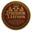

Vodič za MetaMask i BNB Smart Chain
1. Instalacija kripto novčanika MetaMask-a
Preuzmite i instalirajte MetaMask prema uređaju koji koristite:
- iOS (App Store)
- Android (Google Play)
- Chrome / Brave ekstenzija (Windows/Mac)
- Zvanični sajt za sve platforme
Nakon instalacije, pokrenite aplikaciju i kreirajte novi novčanik prateći uputstva unutar aplikacije. Obavezno sačuvajte svoju „seed“ frazu (tajni kod za oporavak) na sigurnom mestu – ona je ključ za pristup vašem novčaniku.
2. Dodavanje BNB Smart Chain mreže
Otvorite MetaMask, idite na Podešavanja → Mreže → Dodaj mrežu. Možete automatski dodati BNB Smart Chain preko Chainlist klikom na „Add to MetaMask“, ili ručno unesite sledeće parametre (izvor: Binance Academy):
- Network Name: BNB Smart Chain
- New RPC URL: https://bsc-dataseed.binance.org/
- Chain ID: 56
- Currency Symbol: BNB
- Block Explorer URL: https://bscscan.com
3. Dodavanje tokena Dušanov Zlatnik
Nakon što ste prebacili MetaMask na BNB Smart Chain mrežu, kliknite na dugme „Uvezi token“ (Import Token) i ručno unesite sledeće podatke:
- Token Contract Address: 0x27a81dce6f4bd0f2a6f3c17e195ecdb773051a00
- Symbol: ZLATNIK
- Decimals: 18
Za proveru tačnosti podataka, posetite zvanični BscScan profil tokena.
Nakon uspešnog dodavanja, token „Dušanov Zlatnik“ biće prikazan u vašem MetaMask novčaniku.
Poslednje ažuriranje: jul 2025.